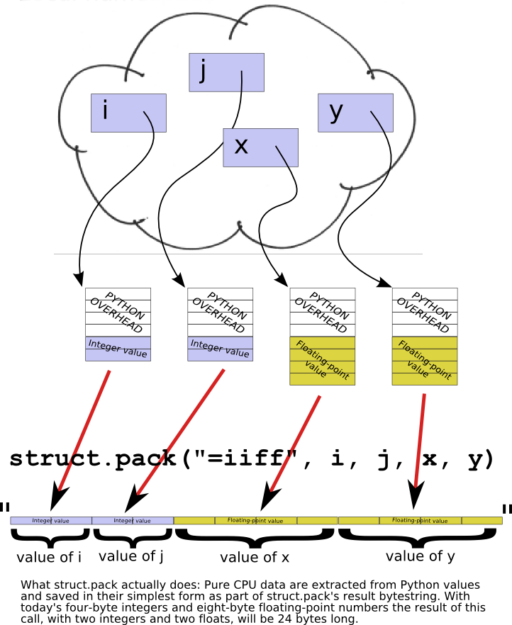

This lesson includes these sections:
You have learned about many different data types that Python can deal with. This lesson explains how Python can be persuaded to exchange data with arbitrary programs, over whose data you have no control.
So far, all the external data (coming to and from files or the console) has been character or string data. You have handled this data without really needing to understand how it is represented, and now it is time to think about that a little. This requires you to understand something about character data to start with.
For quite a long time, the computer industry got by using character sets with only a limited number of characters. This was acceptable because people in most countries were writing programs for local consumption, and so they could encode their local alphabet so that each character was mapped onto one of the possible values of a byte. (A byte contains eight bits, so there are 256 different possible values from 0 to 255). Such a mapping is often referred to as an encoding of a character set. There has to be an agreement that different programs will treat the same byte values as representing the same character. For a long time, Python's string type used the US ASCII character set, using one byte to represent each character.
Then, the realization dawned that computer programs would eventually need to be capable of handling multiple languages, and in the mid-1980s work began on a way to encode much larger character sets, with the ultimate intention of being able to represent any text at all. This work ultimately led to the development of a standard called Unicode, which is what Python now uses to represent its strings. Internally, this requires the interpreter to represent each character as one to four bytes, using an encoding known as UTF-8. Python also provides support for many other encodings.
Unicode is not the most memory-efficient way to represent strings, and so for external storage and transmission a number of different ways of representing Unicode strings (normally referred to as encodings, just like ASCII) have been devised. Probably the most common in the Western world is UTF-8, which has been specially devised so that Unicode strings containing only ASCII characters will encode into the equivalent ASCII strings. The Python installed in Ellipse makes a default assumption that the external encoding of the text strings that it reads is UTF-8, but you may find that other Python interpreters have been configured to expect other encodings. You can ask the interpreter how it has been configured by calling sys.getdefaultencoding(), and you can determine the assumption it makes about the contents of text files by calling sys.getfilesystemencoding(). The two will not necessarily be the same, as you can see:
>>> import sys >>> sys.getdefaultencoding() 'utf-8' >>> sys.getfilesystemencoding() 'utf-8'
| Modern Python | The original course was written for Windows, where
sys.getfilesystemencoding() returned 'mbcs' (a Windows multi-byte
encoding alias). On modern macOS and Linux, both calls return 'utf-8'. The
underlying point—that the two encodings can differ—still holds on some platforms, but is less
common today than it was in early Python 3. |
There are, however, times when it's important to be able to communicate in other than character terms. Sometimes, for example, you will receive a binary file and a description of its layout, and you will need to convert that data into the necessary Python types in order to be able to operate on it. Sometimes you will need to write your Python data out in a format required by other programs, with "raw" computer data types rather than string-based representations.
Most computers only work with a very limited set of different types of data: integers (of various sizes), floating-point numbers (of various sizes), and (sometimes) strings of bytes. Data types like Python's dicts and lists are not dealt with directly by the central processing unit (CPU). That is what the interpreter is for: it is a special-purpose program specifically designed to give you the impression that Python's data types are built in.
If you were to look at the layout in memory of a Python floating-point number, for example, you would see that it is far more complicated than a regular floating-point number used by the CPU. This is because the interpreter must maintain a bunch of overhead to do things like keeping track of how many references there are to an object (so the memory it uses can be reclaimed when it is no longer in use). But programs in other languages would not be able to make any sense out of Python's representation; they just want the data without any of that overhead.
So this leads to the interesting question of how the CPU actually represents the basic data types it is capable of dealing with. Fortunately "there's a module for that" in Python: the struct module (discussed later). It allows you to build memory structures (Python bytes objects) that can be written out to files or transmitted across networks for consumption by other programs.
The byte is the smallest addressable unit of memory in a modern computer and, as mentioned above, holds eight bits. A bytes object is a sequence of bytes, and so it can be subscripted and sliced just like strings and lists. When you open a file in binary mode and read data from it, what you get back is a bytes object. No decoding takes place on input, and no encoding on output. When a bytes object is read or written, you get the data transmitted, with no attempts to change it.
| Note | Python also implements a bytearray type. This is similar to the bytes type, but unlike strings and bytes, the bytearray is mutable, so you can change individual bytes by indexing, or sub-arrays by slicing. |
| Modern Python | The distinction between bytes (immutable) and bytearray
(mutable) is one of the most important changes Python 3 introduced compared with Python 2,
where a single str type served both purposes. When you only need to read or
inspect raw bytes, prefer bytes. When you need to build or modify a buffer
in-place, use bytearray. For zero-copy slicing of large byte buffers (avoiding a
copy on every slice), Python 3 also offers memoryview:
mv = memoryview(data); chunk = mv[100:200] — chunk shares
the underlying memory rather than copying it. |
The bytes and bytearray objects allow you to map the individual bytes of a file's contents, or of a sequence of bytes read over the network. The struct module allows you to interpret these values as the computer's basic data types—bytes, integers, and floating-point numbers.
The memory that your program works with (under the hood, that is, rather than the Python data types) is like a large bytearray, and the index of each byte is usually called its address. Addresses start, like Python indexes, at zero and go up by ones.
The numbers that computers can deal with have grown bigger over the years. The more bits a number has, the larger the range of values it can represent. In modern computers, integers (whole numbers) will typically be represented as four bytes (though with the emergence of 64-bit computers, they can also be eight bytes). In older machines, they would be two bytes, now often referred to as a "short." Furthermore, integers can be either signed or unsigned, the former being able to represent both positive and negative values, the latter always interpreted as positive values.
There are two principal ways to store numbers, known (for reasons we need not go into) as "big-endian" and "little-endian". The difference between them is the way that the bytes are stored: in a big-endian system, the most significant byte of a number is stored at the lowest memory address; in a little-endian system, it is stored at the highest memory address. For simplicity, let's consider a 16-bit (2-byte) representation of the number 1027.
The most significant byte will have the value 4, and the least significant byte will have the value 3 because 1027 = (4 * 256) + 3.
If this is stored at address 325676 in your program's memory, on a big-endian system it would look like this:
On a little-endian system, the same value stored at the same address would look like this:
This might not seem like much of a difference, but you have to know which endianness the data has when you are dealing with numbers made up of more than one byte. Otherwise you will interpret the numbers wrongly. The same thing occurs with longer values, though the arithmetic involved is more complex. Suppose you had the following bytes stored in memory starting at address 1367744.
If this were a big-endian number, its most significant byte would be the 4 shown on the left, and its value would be (((4*256+3)*256+2)*256+1 = 67,305,985.
If it were little-endian, however, its most significant byte would be the 1 on the right, making its value (((1*256+2)*256+3)*256+4 = 16,909,060.
This should, we hope, convince you of the necessity to understand which type of data you are dealing with, since to deal with it the wrong way will lead to values that are just plain wrong!
Yet another factor to take into account is the alignment of data. It is common for data to be aligned so that their starting address is a whole multiple of their size, so long (4-byte) integers will always be stored at an address that is an even multiple of 4, and so on.
These alignment rules are usually advisory rather than mandatory, but they are important: due to the way memory access works, it can take several times as long for the computer to add two non-aligned integers as it does to add two correctly-aligned ones. It's important to note that if the data are aligned this way, there may be so-called "packing" bytes inserted between values of different sizes. If you fail to take account of this, you will end up using the wrong bytes!
The struct module has been designed specifically to allow you to handle chunks of data that have been stored or transmitted in binary form to your Python program. Typically, you will read the data either from a file opened in binary mode or across a network connection. The module provides an unpack() function to let you interpret binary data and convert it to the appropriate Python data types. Its pack() function does the opposite, taking various Python data and converting them to a bytes object that can be stored or transmitted for other programs to interpret.
Both pack() and unpack() require a description of the data types in the bytes. This is presented as what the documentation refers to as a format string, whose first character is used to indicate the endianness of the data. In the following table, "native" means according to the rules of the particular computer on which the program is running. "Standard" alignment simply uses no packing bytes no matter whether items are correctly aligned or not. If the first character is none of those shown, it is assumed to be part of the format, and native settings are assumed.
| First Character | Endianness | Packing |
|---|---|---|
| @ | Native | Native |
| = | Native | Standard |
| < | Little-endian | Standard |
| > | Big-endian | Standard |
| ! | Network (same as big-endian) | Standard |
The remainder of the format string is a description of the individual data items that appear in the bytes object (for unpacking) or that are to be placed into the bytes object (for packing). The format characters can be preceded by a number, which indicates the number of values of that type to expect (except when the format character is "s," in which case it indicates the number of bytes in the string. This table shows the meanings of the various format characters.
| Format | C Data Type | Python Type |
|---|---|---|
| x | Pad byte | - |
| c | char | bytes (length 1) |
| b | signed char | integer |
| B | unsigned char | integer |
| ? | _Bool | bool |
| h | short | integer |
| H | unsigned short | integer |
| i | int | integer |
| I | unsigned int | integer |
| l | long | integer |
| L | unsigned long | integer |
| q | long long | integer |
| Q | unsigned long long | integer |
| f | float | float |
| d | double | float |
| s | char[] | bytes |
| p | char[] | bytes |
| P | void* | integer |
If you aren't a C programmer, the "C types" may not mean that much. All you really need to know is that the unsigned types will always give positive values, and that if you try to pack a value that's too large to be held in the field, the interpreter will raise an exception.
| Modern Python | For cases where you need to convert a single integer to/from bytes without
building a full struct format string, Python 3.2+ provides
int.to_bytes() and int.from_bytes() as convenient alternatives:
n = 1027 big = n.to_bytes(2, byteorder='big') # b'\x04\x03' little = n.to_bytes(2, byteorder='little') # b'\x03\x04' back = int.from_bytes(big, byteorder='big') # 1027These are cleaner than struct.pack('>H', 1027) when you are dealing with a
single integer value. The struct approach remains the right tool when working with
compound binary records (multiple fields of mixed types in one buffer). |
One advantage of passing values in their binary form rather than as characters is that the representation will be exact, as bit-for-bit copies always are. Here is a demonstration that storing floating-point data in character form and reading it back can introduce small inaccuracies. There is no test code for this, since it is a simple demonstration program (it could be cast as a test, but this might obscure the actual differences in values). Create floattest.py as shown:
"""
floattest.py: checks for inaccuracies in floating-point test representations.
"""
import random, os
rlist = [random.random() for i in range(10)]
filename = "/tmp/floatdata.txt"
f = open(filename, "w")
for x in rlist:
print(x, file=f)
f.close()
f = open(filename)
for i in range(10):
x = float(f.readline())
if x != rlist[i]:
print(i, x, rlist[i], abs(x-rlist[i]))
else:
print(i, x, "values agree")
print(filename, os.stat(filename).st_size)
f.close()
The program uses random numbers, and is therefore not entirely reproducible. A typical run, however, looks like this:
0 0.308013405042 0.308013405042 7.58837437331e-14 1 0.383104050277 0.383104050277 2.5923707625e-13 2 0.279337151492 0.279337151492 3.80695475144e-13 3 0.262911769705 0.262911769705 4.72399896978e-14 4 0.97192333336 0.97192333336 4.15112388907e-13 5 0.535110192091 0.535110192091 2.10942374679e-13 6 0.453739263223 0.453739263223 4.61797267093e-13 7 0.346532896806 0.346532896806 2.92266211233e-13 8 0.237582673656 0.237582673656 3.80195874783e-13 9 0.157670914981 0.157670914981 8.15458811587e-14 /tmp/floatdata.txt 197
| Modern Python | In Python 3.1 (when this course was written), repr() of a
float used just enough digits to round-trip the value, but the string form printed by
print(x) sometimes used fewer, introducing the tiny discrepancies shown
above. From Python 3.1 onward, str(float) and repr(float) both
use the shortest decimal string that rounds back to the same IEEE 754 double, so in
current Python 3 you may find that all ten values agree even in the text version. The
binary version is still preferred for performance and guaranteed bit-for-bit fidelity
across all platforms. |
If you think about it, this seems completely weird: the program is telling you that (to take the first line as an example) 0.308013405042 differs from 0.308013405042 by 7.58837437331e-14. Now, that is a very small difference—another way to write it is 0.0000000000000758837437331, which is probably an error in the very last bit of the number. But any avoidable error is bad. It is obvious that there are two very slightly different numbers that Python represents as the string "0.308013405042." Could we avoid those errors by using the struct module? Edit the program as shown:
"""
floattest.py: check for inaccuracies in floating-point test representations.
"""
import random, os, struct
filename = "/tmp/floatdata.bin"
rlist = [random.random() for i in range(10)]
f = open(filename, "wb")
f.write(struct.pack("=10d", *rlist))
for x in rlist:
print(x, file=f)
f.close()
f = open(filename, "rb")
for i in range(10):
s = f.read(8)
x = float(f.readline())
x, = struct.unpack("=d", s)
if x != rlist[i]:
print(i, x, rlist[i], abs(x-rlist[i]))
else:
print(i, x, "values agree")
print(filename, os.stat(filename).st_size)
f.close()
The code uses the struct.pack() function to convert ten floating-point numbers (the elements of rlist, represented as positional arguments by the use of the * argument syntax) to fixed-length byte strings, which are written out to the (binary) floatdata.bin file. Next, it reads back eight bytes at a time, converting each bytes object back into a Python float. The output of this program is much more reassuring.
0 0.505352274992 values agree 1 0.560349256654 values agree 2 0.86326435433 values agree 3 0.775838375892 values agree 4 0.498425623965 values agree 5 0.577260996053 values agree 6 0.247810402776 values agree 7 0.473451623047 values agree 8 0.184083222943 values agree 9 0.388145971055 values agree /tmp/floatdata.bin 80
A further interesting fact is that the (slightly inaccurate) text file is roughly twice as large as the completely accurate binary file (remembering the random nature of the data, your result for the text file may be slightly different).
